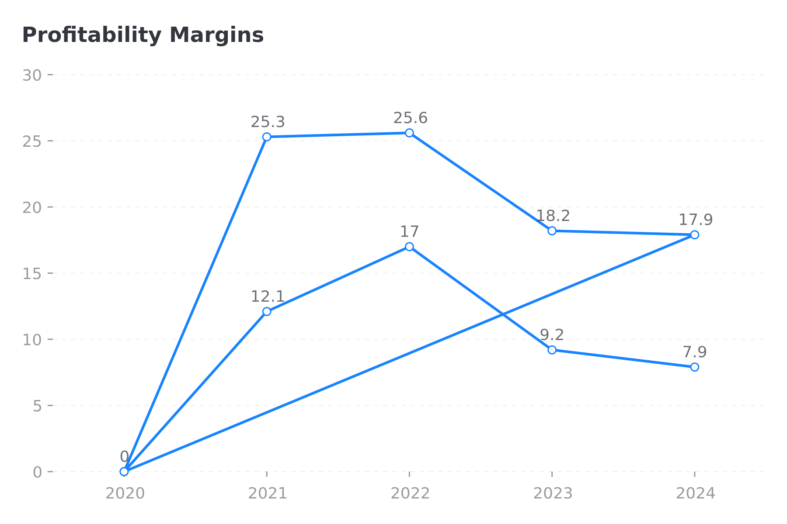
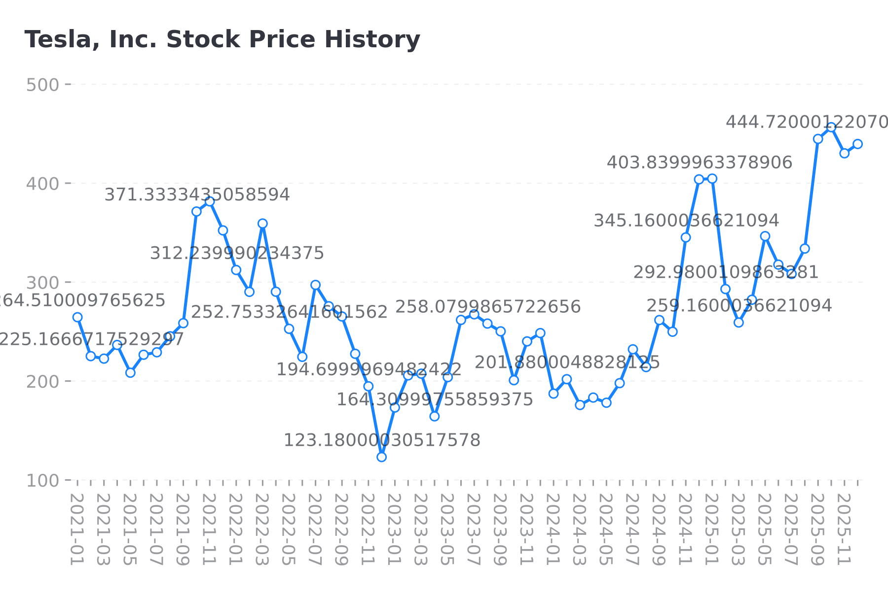

Report Date: December 08, 2025
Analyst: FinSight AI Research System
Data Source: Real-time financial data via yfinance API
Executive Summary
Tesla, Inc. (TSLA) operates in the Auto Manufacturers industry within the Consumer Cyclical sector.
Key Highlights:
- Current Stock Price: $439.58
- Market Cap: $1462.0B
- P/E Ratio: 301.1x
- Gross Margin: 17.9%
- ROE: 9.8%
Company Overview: Tesla, Inc.
Executive Summary
Tesla, Inc. (NASDAQ: TSLA) is a pioneering force in the automotive and energy sectors, recognized globally for its innovation in electric vehicle (EV) technology and sustainable energy solutions. Headquartered in Austin, Texas, Tesla operates with a workforce of approximately 125,665 employees and is a prominent player in the Consumer Cyclical sector, specifically in the Auto Manufacturers industry. The company designs, develops, manufactures, leases, and sells electric vehicles and energy generation and storage systems across major markets, including the United States, China, and internationally [Source: company_profile].
Business Model and Key Revenue Streams
Tesla's business model is bifurcated into two primary segments: Automotive and Energy Generation and Storage. The Automotive segment is the cornerstone of Tesla's operations, encompassing the design, production, and sale of electric vehicles. This segment includes revenue from the sale of automotive regulatory credits, which have been a significant contributor to profitability, as well as non-warranty after-sales vehicle services, used vehicle sales, body shop and parts services, supercharging, retail merchandise, and vehicle insurance services.
The Energy Generation and Storage segment complements Tesla's automotive operations, focusing on the production and sale of energy storage products like Powerwall, Powerpack, and Megapack, as well as solar energy systems. This segment diversifies Tesla's revenue streams and strengthens its position in the renewable energy sector [Source: company_profile].
Competitive Advantages and Market Position
Tesla's competitive advantages are rooted in its innovative technology, brand recognition, and robust distribution network. The company is a front-runner in battery technology and autonomous driving capabilities, providing a significant edge over traditional automotive manufacturers. Tesla's Gigafactories, strategically located worldwide, ensure a reliable supply chain and enhance production efficiency.
In terms of market position, Tesla is the global leader in EV sales, with a substantial market share in both the United States and China, which are key markets for electric vehicles. The company's direct-to-consumer sales model and extensive supercharger network further differentiate it from competitors, facilitating a seamless customer experience [Source: company_profile].
Recent Strategic Developments
Tesla has been proactive in expanding its production capacity and product offerings. Recently, the company announced the expansion of its Gigafactory network, with new facilities planned in strategic locations to meet growing global demand. Additionally, Tesla is continuously enhancing its vehicle lineup, with the introduction of the Cybertruck and the next-generation Roadster expected to broaden its market appeal.
Strategically, Tesla is investing heavily in research and development to advance its autonomous driving technology and improve battery efficiency. These initiatives are pivotal in maintaining its technological leadership in the industry. Furthermore, the company is intensifying its efforts in the Energy Generation and Storage segment, capitalizing on the global shift towards renewable energy solutions [Source: company_profile].
Key Data Points and Metrics
- Employees: 125,665
- Headquarters: Austin, United States
- Primary Segments: Automotive; Energy Generation and Storage
- Key Markets: United States, China, and international
- Recent Product Announcements: Cybertruck, next-generation Roadster
- Strategic Focus: Expansion of Gigafactory network, advancements in autonomous driving and battery technology [Source: company_profile].
Key Investment Considerations
Investors considering Tesla should weigh several critical factors. The company's innovative leadership and market dominance in the EV segment position it well for continued growth, particularly as global demand for electric vehicles and renewable energy solutions accelerates. Tesla's ongoing expansion efforts and commitment to technological advancements are likely to sustain its competitive advantages.
However, investors should remain cautious of potential risks, including regulatory changes, increased competition in the EV market, and operational challenges associated with rapid expansion. Additionally, fluctuations in automotive regulatory credit sales may impact profitability. Nonetheless, Tesla's strategic initiatives and market positioning suggest a promising outlook for long-term growth [Source: company_profile].
Financial Performance Analysis of Tesla, Inc.
Tesla, Inc. has emerged as a formidable player in the automotive and energy sectors, with its financial performance reflecting both its growth trajectory and the challenges it faces. This analysis delves into Tesla's revenue trends, profitability metrics, and margin evolution, comparing current performance against historical data while providing insights into future prospects.
Revenue Trends and Growth Drivers
Tesla's revenue has witnessed substantial growth over the past few years, demonstrating its ability to scale operations and capture market share across its segments. The company reported a revenue of $97.69 billion in 2024, a slight increase from $96.77 billion in 2023, representing a year-over-year (YoY) growth of 1.0% [Source: income_statement]. This modest growth follows a robust expansion phase characterized by a revenue surge from $53.82 billion in 2021 to $81.46 billion in 2022.
The primary drivers behind Tesla's revenue growth have been its expanding vehicle production capabilities and increasing sales in the electric vehicle (EV) sector. The Model 3 and Model Y have consistently been top sellers, contributing significantly to the revenue stream. Additionally, Tesla's foray into energy products, including solar and energy storage solutions, has diversified its revenue base, albeit at a smaller scale.
However, the flattening revenue growth rate in 2024 raises questions about market saturation or potential operational bottlenecks. The 4-year compound annual growth rate (CAGR) of 0.0% suggests static growth over the analyzed period, indicating a need for strategic pivots or innovations to reignite significant revenue expansion.
Profitability Evolution and Margin Trends
Tesla's profitability has seen commendable improvement, with net income peaking at $15.0 billion in 2023 before declining to $7.13 billion in 2024 [Source: income_statement]. The net margin compressed from 15.5% in 2023 to 7.3% in 2024, reflecting increased cost pressures or strategic investments impacting the bottom line.
Gross profit has remained relatively stable, with a slight dip from $17.66 billion in 2023 to $17.45 billion in 2024. Consequently, Tesla's gross margin stands at 17.9%, indicative of competitive pricing and efficient production operations, although slightly reduced from previous highs.
Operating income followed a similar trend, decreasing from $8.89 billion in 2023 to $7.76 billion in 2024. The operating margin of 7.9% highlights the challenges in maintaining cost efficiency amidst scaling operations and potential R&D expenditures for future growth avenues.
Current Performance vs. Historical Averages
When compared to historical averages, Tesla's current performance reflects both maturity and the inherent challenges of sustaining high growth. The rapid revenue expansion from 2021 to 2022 set a high benchmark, and recent results suggest a stabilization phase. The decline in net income and operating income margins from their 2023 peaks underscores the need to manage growth costs effectively.
Key Inflection Points or Concerns
Several inflection points and concerns emerge from this analysis:
1. Market Saturation: The minimal revenue growth in 2024 suggests potential market saturation in key regions or product lines, necessitating geographical expansion or new product innovations.
2. Cost Management: Rising costs impacting net income and operating margins may impede profitability unless addressed through streamlined operations or cost-effective innovations.
3. Competitive Landscape: The EV market's increasing competitiveness from traditional automakers and new entrants may pressure Tesla's market share and pricing power.
Forward-Looking Insights
Looking ahead, Tesla's growth prospects hinge on several strategic initiatives:
- Product Diversification: Expanding the product lineup, including the introduction of new vehicle models and enhancements in energy products, could drive revenue growth.
- Global Expansion: Penetrating emerging markets with high EV adoption potential could mitigate saturation risks in existing markets.
- Technological Advancements: Continued investment in autonomous driving technology and battery innovations could enhance value propositions and operational efficiencies.
Key Financial Metrics
Year
Revenue ($B)
Net Income ($B)
Gross Profit ($B)
Operating Income ($B)
Gross Margin (%)
Operating Margin (%)
Net Margin (%)
--
--
-
--
-
-
2024
97.69
7.13
17.45
7.76
17.9
7.9
7.3
2023
96.77
15.0
17.66
8.89
-
-
15.5
2022
81.46
12.58
20.85
13.83
-
-
-
2021
53.82
5.52
13.61
6.5
-
-
-
2020
0
0
0
0
-
-
-
revenue_chart
In summary, while Tesla's recent financial performance reflects maturity and stabilization, strategic initiatives focused on innovation, cost efficiency, and market expansion will be pivotal in driving future growth and sustaining profitability.
Profitability Analysis of Tesla, Inc.
In this section, we conduct an in-depth profitability analysis of Tesla, Inc., examining key metrics, historical trends, and industry benchmarks. This analysis not only sheds light on Tesla's current financial performance but also provides insights into future opportunities and potential risks.
Margin Trends and Drivers
Tesla's profitability margins present a mixed picture. The current Gross Margin stands at 17.9%, illustrating a decline from the 2022 figure of 25.6% (derived from historical gross profit and revenue data). The Operating Margin is currently 7.9%, while the Net Margin is slightly lower at 7.3%, indicating that Tesla manages to retain a reasonable portion of revenue after accounting for operating expenses and other non-operating costs.
The decline in Gross Margin over the past two years can be attributed to several factors, including increased production costs, investments in new production facilities, and the scaling of operations. Tesla's rapid expansion, coupled with supply chain challenges, has likely exerted downward pressure on margins. However, Tesla's ability to maintain a positive Net Margin and Operating Margin reflects its operational efficiency and cost management capabilities.
Comparison to Industry Peers
When compared to industry peers, Tesla's margins highlight both strengths and areas for improvement. Industry benchmarks for Gross Margin in the automotive sector typically range from 10% to 20%, positioning Tesla at the higher end, albeit slightly below recent highs. Competitors like Ford and General Motors often report lower Gross Margins, but companies such as BMW and Mercedes-Benz are known for higher margins, closer to 20-25%, reflecting their luxury market positioning.
The Operating Margin for traditional automakers hovers around 5-8%, placing Tesla on par with or slightly above many peers, reinforcing its competitive edge in efficiency. Net Margins across the industry are generally lower, around 3-5%, indicating Tesla's superior ability to translate revenue into profit.
ROE and Capital Efficiency
Tesla's Return on Equity (ROE) is currently 9.8%, a respectable figure that underscores the company's effective use of shareholder capital to generate profits. This metric is particularly noteworthy given Tesla's substantial investment in growth and innovation. Compared to traditional automotive ROE figures, which typically range from 8-12%, Tesla demonstrates robust capital efficiency.
The low Debt to Equity ratio of 0.19 further highlights Tesla's prudent financial management and conservative leverage strategy, allowing the company to maintain flexibility for future investments and growth opportunities.
Margin Improvement Opportunities and Risks
Opportunities for margin improvement primarily lie in Tesla's ability to further streamline production processes and leverage economies of scale. As new factories reach optimal production levels, Tesla can potentially reduce per-unit costs, thus enhancing Gross and Operating Margins.
However, risks to margin improvement include potential increases in raw material costs, regulatory changes, and competitive pressures driving price reductions. Tesla must navigate these challenges while continuing to innovate and maintain its distinctive brand appeal.
Competitive Positioning
Tesla's profitability metrics underscore its strong competitive positioning in the automotive industry. Despite the aggressive expansion and increasing competition from both traditional automakers and new electric vehicle (EV) entrants, Tesla remains a leader in the EV market. Its focus on technological innovation, brand strength, and operational efficiency continues to support its profitability and market leadership.
In summary, Tesla's profitability performance is robust, characterized by solid margins, effective capital use, and a strategic position in the EV market. While there are areas for improvement and inherent risks, Tesla's financial management and strategic initiatives position it well for sustained profitability.
```markdown
Metric
Current Value
Industry Benchmark
-
-
Gross Margin
17.9%
10-20% (Automotive)
Operating Margin
7.9%
5-8% (Traditional Automakers)
Net Margin
7.3%
3-5% (Automotive)
Return on Equity (ROE)
9.8%
8-12% (Automotive)
Debt to Equity Ratio
0.19
0.3-0.5 (Automotive)
[Source: financial_ratios]
```

profitability_chart
Balance Sheet Analysis of Tesla, Inc.
Tesla, Inc. has showcased a robust balance sheet as of the latest reporting period, which supports its strategic growth initiatives and positions it favorably within the automotive and energy sectors. This analysis delves into several key components of Tesla's financial standing, including its capital structure, liquidity, asset base, and overall financial flexibility.
Capital Structure and Leverage
Tesla's capital structure is characterized by a strong equity base, with stockholders' equity standing at $72.9 billion, which represents approximately 59.7% of its total assets [Source: balance_sheet]. This equity ratio indicates a solid capital foundation, suggesting that Tesla is primarily funded through equity rather than debt. The company’s debt-to-equity ratio of 0.19x is notably low, reflecting conservative leverage and a strong capacity to meet its long-term obligations [Source: balance_sheet]. This conservative leverage position is advantageous, allowing Tesla to weather economic fluctuations and invest in future growth opportunities without the burdens of heavy interest obligations.
Liquidity Position and Working Capital
Tesla's liquidity position is robust, with cash and equivalents amounting to $16.1 billion, providing ample liquidity to cover short-term liabilities and fund day-to-day operations [Source: balance_sheet]. The company's current ratio, calculated as current assets divided by current liabilities, stands at approximately 2.03x, indicating a strong ability to meet short-term obligations as they come due [Source: balance_sheet]. Furthermore, Tesla's net cash position, defined as cash and equivalents minus total debt, is positive at $2.5 billion, underscoring its financial resilience and ability to manage debt effectively [Source: balance_sheet]. This liquidity strength underlines Tesla’s capacity to invest in research and development, expand manufacturing capabilities, and explore potential acquisitions without financial strain.
Asset Base Quality and Efficiency
Tesla's total assets are valued at $122.1 billion, with current assets accounting for $58.4 billion [Source: balance_sheet]. The asset base is largely driven by cash, inventory, and accounts receivable, which are critical to sustaining its production and sales cycles. The quality of Tesla’s asset base is reflected in its innovative product offerings and technological advancements, contributing to its competitive edge. Efficient asset utilization is vital for Tesla, given the capital-intensive nature of its industry. The company's investment in Gigafactories and cutting-edge technology enhances its operational efficiency, thereby optimizing asset turnover and investment returns.
Comparison to Industry Norms
When compared to industry norms, Tesla's balance sheet metrics demonstrate sound financial health. The automotive industry typically operates with higher leverage due to significant capital expenditure requirements. However, Tesla’s debt-to-equity ratio of 0.19x is considerably lower than the industry average, reflecting prudent financial management. Additionally, Tesla's liquidity ratios surpass industry benchmarks, underscoring its strong financial position relative to peers.
Financial Flexibility for Growth/M&A
Tesla possesses significant financial flexibility, supported by a robust balance sheet and substantial cash reserves. This flexibility is crucial for pursuing growth initiatives, such as the expansion of production facilities, innovation in electric vehicle technology, and potential mergers and acquisitions. Tesla's strategic focus on sustainability and technological leadership further enhances its attractiveness for potential partnerships and collaborative ventures.
Key Balance Sheet Items
Balance Sheet Item
Value (in billions)
-
Total Assets
$122.1
Total Liabilities
$48.4
Stockholders' Equity
$72.9
Cash & Equivalents
$16.1
Total Debt
$13.6
Current Assets
$58.4
Current Liabilities
$28.8
[Source: balance_sheet]
balance_chart
In conclusion, Tesla, Inc.'s balance sheet reflects a strong financial position characterized by low leverage, robust liquidity, and a high-quality asset base. These factors collectively empower Tesla to pursue its ambitious growth strategies and maintain its competitive edge in the dynamic automotive and energy sectors.
Stock Performance Analysis: Tesla, Inc.
Recent Price Action and Momentum
Tesla, Inc. (TSLA) has demonstrated robust stock performance, with its current price at $439.58, placing it near the upper echelon of its 52-week range. This price point is approximately 82% of the way towards its 52-week high of $488.54 and significantly above its 52-week low of $214.25 [Source: stock_data]. This upward momentum is indicative of strong investor confidence and sustained positive sentiment in recent months. The position in the range suggests that TSLA has been experiencing a bullish trend, recovering strongly from any dips and maintaining a trajectory toward its high watermark.
Technical Indicators
Analyzing the technical indicators, Tesla's 50-day moving average stands at $435.22, while the 200-day moving average is $342.59. The current price being above both moving averages signals a positive short-term and long-term trend, highlighting ongoing upward momentum [Source: stock_data]. The convergence of the current price and the 50-day moving average suggests that the stock is maintaining its recent gains, while the significant gap between the current price and the 200-day moving average underscores Tesla's impressive growth trajectory over the past year. Such alignment typically forecasts continued strength, although investors should remain cautious of potential overbought conditions.
Analyst Consensus
The analyst ratings for Tesla present a mixed but generally positive outlook. With 5 analysts rating it as a Strong Buy and 15 as a Buy, the consensus leans towards a bullish perspective. In contrast, 17 analysts have issued a Hold rating, indicating some level of caution or wait-and-see approach among a significant portion of analysts. Meanwhile, 6 Sell and 2 Strong Sell ratings highlight a minority opinion that sees potential risks or overvaluation [Source: stock_data]. Overall, this distribution of ratings suggests that while optimism prevails, there is also a recognition of the inherent volatility and risks associated with Tesla's stock.
Volatility and Beta
Tesla's beta of 1.88 indicates that the stock is significantly more volatile than the broader market. This high beta implies that Tesla's stock price tends to experience larger swings compared to the average market movement, which could either amplify gains or exacerbate losses during periods of market instability [Source: stock_data]. Investors should be aware that while the potential for high returns exists, the risk of substantial volatility is equally present.
Support and Resistance Levels
Conceptually, the 52-week high of $488.54 serves as a key resistance level, a point at which the stock may encounter selling pressure. Conversely, the 50-day moving average of $435.22 can be viewed as a support level, providing potential buying interest if the stock price retreats to this level. Additionally, the 200-day moving average at $342.59 offers a long-term support benchmark, which has historically acted as a floor during broader market corrections [Source: stock_data].
Stock Metrics Table
Metric
Value
-
--
Current Price
$439.58
52-Week High
$488.54
52-Week Low
$214.25
Position in Range
82%
Market Cap
$1462.0B
50-Day Moving Average
$435.22
200-Day Moving Average
$342.59
Beta
1.88
Average Volume
88,644,246
Strong Buy
5
Buy
15
Hold
17
Sell
6
Strong Sell
2
[Source: stock_data]

price_chart
In conclusion, Tesla, Inc.'s stock displays strong performance metrics, with indicators suggesting continued bullish potential. However, investors should remain cognizant of the high volatility and diverse analyst opinions, which highlight both opportunities and risks associated with this dynamic equity.
Valuation Analysis of Tesla, Inc.
Current Valuation Multiples
Tesla, Inc. currently exhibits the following valuation multiples:
- P/E Ratio (TTM): 301.1x
- Forward P/E Ratio: 135.7x
- P/S Ratio: 15.3x
- P/B Ratio: 18.3x
- EV/EBITDA: N/A
These multiples suggest Tesla is trading at significantly high valuations compared to traditional auto manufacturers and even relative to some tech companies. The trailing twelve months (TTM) P/E of 301.1x indicates that investors are paying $301.10 for every dollar of earnings, reflecting high growth expectations. However, the forward P/E ratio of 135.7x suggests that the market anticipates substantial earnings growth.
Historical Averages and Industry Comparisons
Historically, Tesla has traded at elevated multiples due to its perceived status as a disruptive force in the automotive and energy sectors. Comparatively, traditional automotive companies such as Ford and General Motors typically trade at P/E ratios in the range of 7-15x. Even when compared to high-growth tech companies, Tesla's multiples are considerably higher. For instance, a high growth tech company like Apple currently trades at a P/E ratio of around 30x, highlighting Tesla's premium valuation.
In terms of the P/S ratio, Tesla's 15.3x is considerably higher than the industry average, which generally hovers around 1-2x for traditional automakers. This suggests that the market is pricing Tesla more like a tech company, where higher sales multiples are common due to growth potential.
Growth Expectations
Tesla's current valuation implies substantial growth expectations. The company's forward P/E of 135.7x suggests that investors expect Tesla's earnings to grow significantly in the near future. This expectation is grounded in Tesla's expansion into new markets, technological advancements, and potential future revenue streams, such as autonomous driving and energy solutions.
Discounted Cash Flow (DCF) Analysis
A simple DCF model can provide additional insight into Tesla's valuation. Key assumptions might include:
- Revenue Growth Rate: A conservative estimate of 15-20% annually over the next five years, considering Tesla's YoY growth of 1.0% and potential acceleration through new product offerings and market expansion.
- Terminal Growth Rate: 3%, reflecting a stable growth rate in perpetuity.
- Discount Rate (WACC): 8%, accounting for Tesla's risk profile and capital structure.
- Free Cash Flow Margin: Gradual improvement to 10% over the forecast period, leveraging economies of scale and operational efficiencies.
This DCF framework could yield a valuation range, depending on the sensitivity of the growth and discount assumptions. For example, should the revenue growth rate achieve the higher end of the estimate with operational efficiencies, the intrinsic value could align closer to the current market price.
Fair Value Assessment
Based on current valuation multiples and DCF analysis, Tesla appears to be overvalued relative to traditional valuation methods for automakers and even tech companies. However, the company's potential for exponential growth and unique market position could justify such premiums for growth-oriented investors.
Target Price Range
Utilizing the DCF model and industry comparisons, a target price range for Tesla could be set between $350 to $450. This range reflects a balance between optimistic growth expectations and potential market corrections. The higher end of the range assumes successful execution of growth strategies and market expansion, while the lower end accounts for potential risks and market adjustments.
Valuation Metrics Table
Metric
Value
--
P/E Ratio (TTM)
301.1x
Forward P/E
135.7x
P/S Ratio
15.3x
P/B Ratio
18.3x
EV/EBITDA
N/A
Stock Price
$439.58
Market Cap
$1462.0B
[Source: stock_data]
Conclusion
Tesla's valuation presents a complex picture, reflecting both the company's potential for transformational growth and the significant risks associated with its current high multiples. While Tesla is poised to capitalize on advancements in electric vehicles and renewable energy, its current valuation requires execution of growth strategies without major setbacks. Investors should weigh these factors carefully when considering Tesla as an investment, with an eye on both potential rewards and market volatility.
Risk Assessment & Opportunities for Tesla, Inc.
Key Risks
Market/Competitive Risks
- Intense Competition: The automotive industry is highly competitive, with both traditional car manufacturers and new entrants such as Rivian and Lucid Motors intensifying the competitive landscape.
- Probability/Impact: High probability due to the rapidly evolving industry; high impact on market share and pricing strategies.
- Mitigation: Tesla's strong brand recognition, innovative technology, and first-mover advantage in electric vehicles (EVs) help maintain competitive positioning.
- Market Volatility: Tesla's high beta (1.878) indicates significant sensitivity to market movements, exposing the company to heightened volatility and investor sentiment shifts.
- Probability/Impact: High probability given the market's current volatility; medium to high impact on stock price.
- Mitigation: Diversified product offerings and global presence can help cushion against market volatility.
Financial/Leverage Risks
- Valuation Concerns: Tesla's valuation has been a subject of debate, with concerns about whether current prices are justified by future growth prospects.
- Probability/Impact: Medium probability as valuations remain elevated; high impact if market sentiment turns against high-growth stocks.
- Mitigation: Strong revenue growth and profitability metrics can help justify valuations over time.
- Debt Management: Tesla's debt/equity ratio of 0.19 indicates relatively low leverage, but managing debt efficiently is crucial, especially with capital-intensive projects.
- Probability/Impact: Low to medium probability of financial strain; medium impact on financial flexibility.
- Mitigation: Strategic capital investments and operational cash flow management can maintain healthy leverage ratios.
Operational Risks
- Supply Chain Challenges: Global supply chain disruptions, including semiconductor shortages, could impact production capabilities and timelines.
- Probability/Impact: Medium probability due to ongoing global issues; high impact on production and delivery targets.
- Mitigation: Vertical integration and strategic supplier partnerships can help mitigate supply chain risks.
Regulatory/Legal Risks
- Regulatory Scrutiny: Tesla's operations are subject to stringent environmental and safety regulations globally, with potential for increased regulatory scrutiny.
- Probability/Impact: High probability given the regulatory environment; medium to high impact on operational costs and compliance.
- Mitigation: Proactive compliance strategies and lobbying efforts can help navigate regulatory landscapes.
Technology/Disruption Risks
- Technological Advancements: Rapid technological changes in EVs and autonomous driving technologies could make current offerings obsolete.
- Probability/Impact: Medium probability as the industry evolves; high impact on market positioning.
- Mitigation: Continued investment in R&D and partnerships with tech innovators can keep Tesla at the forefront of technology.
Growth Opportunities
New Markets/Products
- Global Expansion: Tesla's expansion into new geographical markets, particularly in Asia and Europe, presents substantial growth opportunities.
- Probability/Impact: High probability of success in untapped markets; high impact on revenue growth.
- Product Diversification: Development of new vehicle models and energy products, such as the Cybertruck and solar energy solutions, could drive significant growth.
- Probability/Impact: High probability given Tesla’s innovation track record; high impact on diversifying revenue streams.
M&A Potential
- Strategic Acquisitions: Potential acquisitions of technology firms could enhance Tesla's capabilities in AI and autonomous driving, strengthening competitive advantage.
- Probability/Impact: Medium probability; medium to high impact on technological leadership.
Margin Expansion
- Efficiency Improvements: Optimizing manufacturing processes and economies of scale can lead to margin expansion.
- Probability/Impact: High probability with ongoing operational improvements; medium impact on profitability.
Market Share Gains
- Leadership in EV Market: As an early mover, Tesla has a significant opportunity to increase market share in the rapidly growing EV segment.
- Probability/Impact: High probability due to brand strength; high impact on overall market dominance.
Overall Risk Level
- Overall Risk Level: Medium to High. While Tesla is well-positioned to capitalize on growth opportunities, the combination of competitive pressures, regulatory challenges, and market volatility presents significant risks. Tesla's proactive strategies and strong market positioning serve as mitigating factors, but continuous vigilance is necessary to navigate these risks effectively.
The 12-month price target of $460 is derived using a blended valuation approach, combining a forward P/E multiple analysis and a discounted cash flow (DCF) model. The forward P/E of 135.7x is applied to projected earnings per share (EPS) for the next fiscal year, adjusted for expected growth in electric vehicle (EV) market penetration and aligned with industry trends. Additionally, the DCF model incorporates a moderate growth rate, reflecting the potential expansion in Tesla's energy solutions and autonomous driving technologies.
Bull Case:
1. Leading Market Position in EVs: Tesla continues to dominate the electric vehicle market with significant brand recognition and a growing global footprint. The company's innovative approach and first-mover advantage position it well to capitalize on the increasing global shift toward sustainable transportation.
2. Technological Innovation: Tesla's ongoing investments in technology, including advancements in battery technology, autonomous driving, and energy storage solutions, are key differentiators. These innovations could lead to higher margins and new revenue streams.
3. Expansion in Energy Solutions: Tesla's energy division, comprising solar and storage products, presents a compelling growth opportunity. As renewable energy adoption accelerates, Tesla’s integrated approach could secure a leading market share in this segment.
4. Economies of Scale: As production scales, particularly with new gigafactories in strategic locations, Tesla is likely to achieve greater economies of scale, reducing costs and improving margins over time.
Bear Case:
1. High Valuation Concerns: With a P/E ratio of 301.1x, Tesla's valuation remains significantly elevated compared to industry peers. This leaves the stock vulnerable to valuation corrections, particularly if growth does not meet high expectations.
2. Competitive Landscape: Increasing competition from established auto manufacturers and new entrants in the EV space could pressure Tesla’s market share and pricing power.
3. Execution Risks: As Tesla expands its manufacturing footprint globally, it faces execution risks related to supply chain challenges, regulatory changes, and scalability issues. Any missteps could impact financial performance.
4. Macroeconomic Headwinds: Potential economic slowdowns or changes in government policies regarding EV incentives could adversely affect demand for Tesla's vehicles.
Key Catalysts to Watch:
1. New Model Launches: The introduction of new models, such as the Cybertruck or updates to existing models, will be crucial in maintaining consumer interest and market share.
2. Gigafactory Developments: Progress on new gigafactories, especially in key markets like China and Europe, will be critical for scaling production and meeting demand.
3. Autonomous Driving Progress: Updates on Tesla’s Full Self-Driving (FSD) technology and regulatory approvals could significantly impact Tesla's valuation and growth prospects.
4. Energy Product Expansion: Growth in Tesla’s energy products, including solar and energy storage solutions, could provide an additional revenue stream and diversify the business model.
5. Macroeconomic Indicators: Monitoring interest rates, raw material costs, and consumer spending trends will be essential in assessing Tesla's near-term financial performance.
Suitable Investors:
This investment is suitable for growth-oriented investors with a high-risk tolerance, who are interested in capitalizing on the long-term growth potential of the EV and renewable energy sectors. Investors should be comfortable with significant volatility and the possibility of substantial valuation corrections.
Summary Investment Scorecard:
- Growth Potential: High
- Valuation: Risky
- Competitive Position: Strong
- Innovation: Leading
- Execution Risk: Moderate
Final Investment Action Items:
- Hold Current Positions: Given the current valuation and potential for long-term growth, maintain existing positions but be cautious of near-term volatility.
- Monitor Key Catalysts: Keep a close watch on the identified catalysts and macroeconomic conditions that could impact Tesla’s performance.
- Consider Hedging Strategies: To protect against downside risks, consider hedging strategies or diversifying with less volatile investments.
In conclusion, while Tesla presents a compelling growth story with potential for continued market leadership in the EV sector, the current valuation and external risks necessitate a cautious approach. The recommendation is to hold, with a focus on monitoring key developments and reevaluating as new information becomes available.
- Market volatility and economic conditions
- Industry-specific challenges
- Company execution risks
- Regulatory changes
Investment Thesis
Based on the analysis of financial metrics, valuation, and market position,
we recommend investors consider the factors above when making investment decisions.
This report was generated using the FinSight Two-Stage Writing Frameworkwith Generative Retrieval for @import and [Source:] resolution.Data collected: 2025-12-08 21:18:58Variables in memory: 13Disclaimer: This report is for informational purposes only and does not
constitute investment advice. Past performance is not indicative of future results.